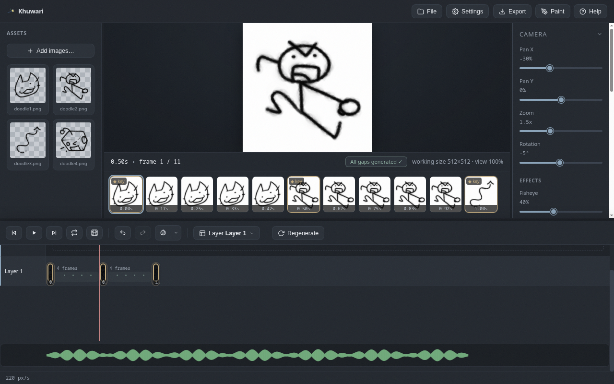

Audio
A reference audio track that plays in sync with your timeline, so you can hit the beat.
What it is
The audio track is a scratch track for timing: load a sound file and it plays in sync with the timeline, so you can animate to the beat or to dialogue. It is there to guide you; it does not appear in the export.

Load and manage audio
In the Audio panel in the right column:
Load audio...lets you pick a sound file (mp3, wav, ogg: any format your browser plays).Mutesilences it without removing it.Removedrops the track.
The Load and Remove buttons swap: Load shows when there is no audio, Remove when there is.
The waveform lane
Once loaded, a green waveform appears in a lane under the timeline. Click anywhere in it to jump the playhead to that moment. The waveform lines up with the same time ruler as your keyframes, so beats line up with frames.
Saved with the project
The audio file is stored inside the .khuwari project, so it comes back when you reopen the file: no hunting for the sound file again. Everything stays on your machine.